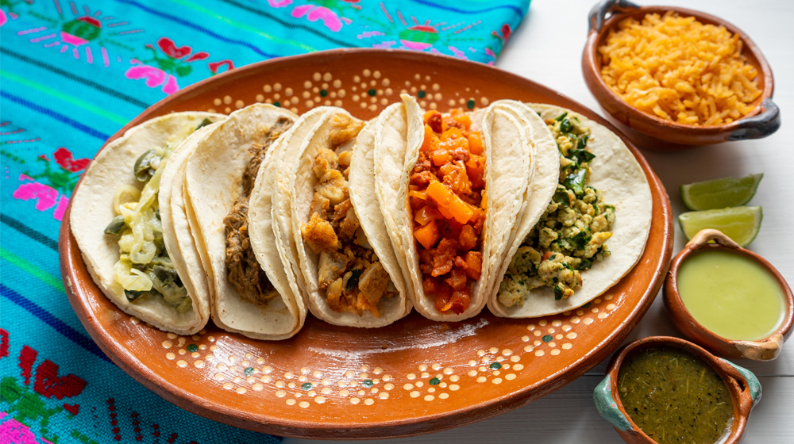

Home
>
Archive
>
Single Post Blog

By Maria
Mayo 19, 2017
20
10
Pionono Salado
Muy sencillo, económico y rápido. Sirve para rellenar con ingredientes dulces o saldos. Aquí va la receta bien caserita, como lo hacia mi abuela.
"La cocina es algo que viene de generación en generación, desde nuestros ancestros hasta ahora en nuestra actualidad. Muchas recetas tradicionales."
ELENA REMOTO
- 2 Cebollas moradas
- 6 Champiñones
- 4 Cucharadas de pan rallado
- 1 Atado de perejil
- 2 Chiles jalapeños
- 1 Paquete de queso dambo en fetas